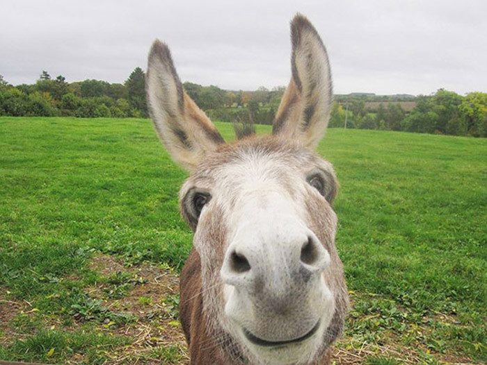

Donkeys are a horse-like animal that has usually been used by humans to carry goods from one area to another. Like llamas, they aren't as strong as horses but can still do work like ploughin. Donkeys' sizes range from 90cm to 150cm.
Click me to get back to the main page!